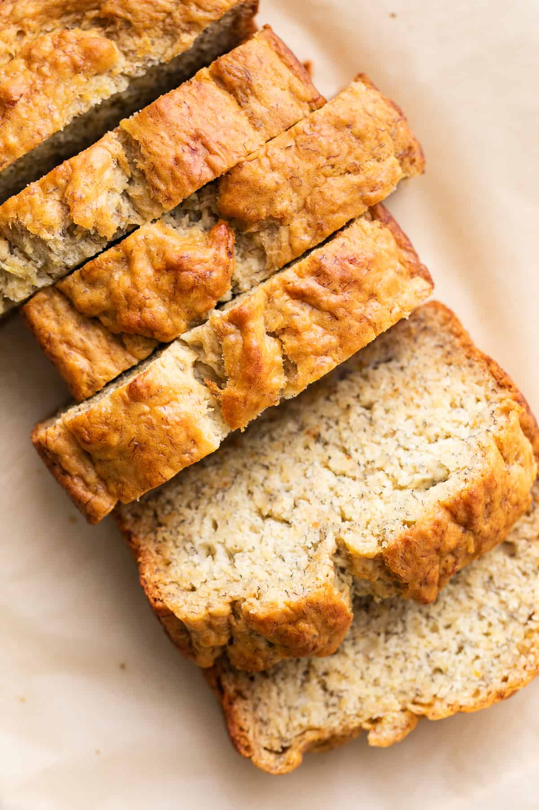

Vegan Banana Bread

Vegan banana breadis a great dish that I will make for Julia one day, find the ingredients below:
- flour
- cane sugar
- baking powder
- baking soda
- salt
- bananas
- vanilla extract
- almond milk
- Add the bananas to the bottom of a medium mixing bowl and mash well, add in the remaining wet ingredients and mix well. Add the dry ingredients to the wet ingredients and mix until just until incorporated. Do not overmix. The batter will be slightly thick and a few lumps is OK.
- Pour the batter in a greased 9 x 5 loaf pan and bake for 50 – 55 minutes. Ovens are different, so use your best judgement. You can test for doneness using a toothpick, if it comes out clean, it’s ready.
- Let the banana bread cool, slice and enjoy. If you find you can’t wait to slice your bread before it’s cooled, you may notice a little gumminess on the knife, this is normal, but once completely cooled it will slice cleanly.